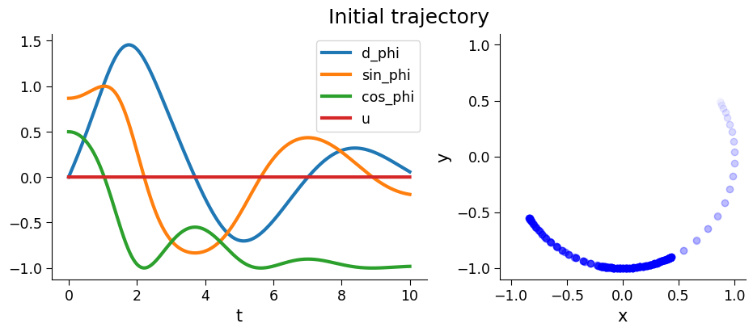
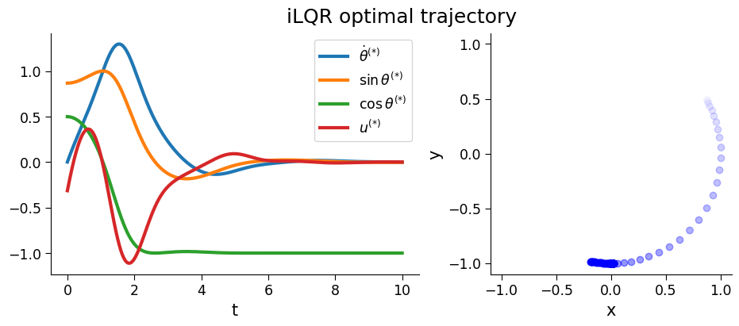
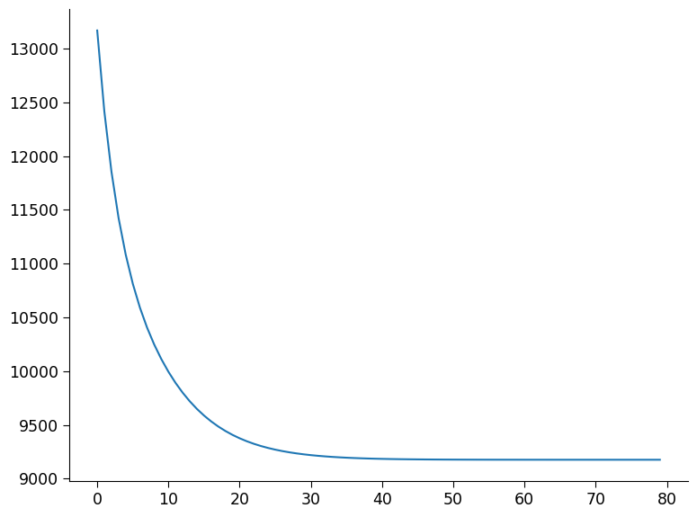
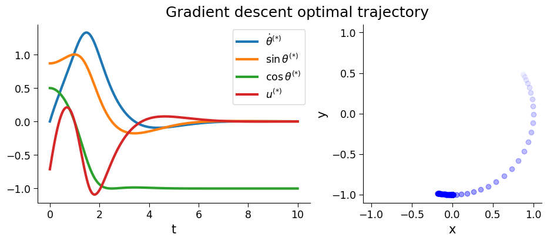
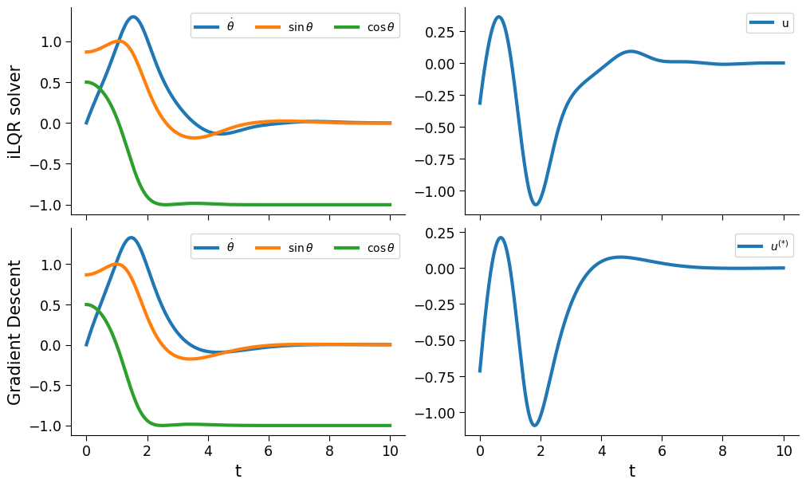

iLQR Optimal Control Compared with Gradient Descent for a Pendulum with a Sliding Pivot#
Imports#
[ ]:
from typing import Any, Tuple, NamedTuple, Callable
import time
import jax
from jax import Array
import jax.random as jr
import jax.numpy as jnp
from jax import value_and_grad, jit
from optax import adam, apply_updates
import matplotlib.pyplot as plt
import matplotlib.colors as mcolors
from diffilqrax.utils import keygen
from diffilqrax.ilqr import ilqr_solver
from diffilqrax.typs import (
iLQRParams,
System,
ModelDims,
)
jax.config.update('jax_enable_x64', True)
The Problem#
We have a pendulum with masses \(m_1=1\) and with lengths \(L_1\) and \(L_2\) which is released from an arbitrary point and has to be driven to the target position.
The cartesian coordinates of the center of mass of each point are defined as
Define dynamics#
The dynamics of the double pendulum in polar coordinates are given by the following equations:
Setting \(\alpha=0.5\), \(\frac{mgl}{J}=1\) and initializing system with \(\theta=\pi + \epsilon\) and \(\dot{\theta}=0\), arrives with simplified dynamics,
Outlined in matrix form, where \(\mathbf{x}=(x_1,x_2)=(\dot{\theta}, \sin\theta)\),
In the discretised case,
and, $$:nbsphinx-math:mathbf{x}{k+t} = :nbsphinx-math:`mathbf{x}`{k} + \delta `:nbsphinx-math:mathbf{x}`_k
[2]:
# define system dimensions
dims = ModelDims(horizon=10000, n=3, m=1, dt=0.001)
[3]:
class PendulumParams(NamedTuple):
"""Pendulum parameters"""
m: float
l: float
g: float
dt: float
def pendulum_step(t:int, state:Array, input:Array, theta: PendulumParams)->Array:
"""simulate the dynamics of a pendulum. x0 is sin(theta), x1 is cos(theta), x2 is theta_dot.
u is the torque applied to the pendulum.
Args:
t (int): timepoint
state (Array): state params
u (Array): external input
theta (Theta): parameters
"""
d_phi, sin_phi, cos_phi = state
# const = theta.g * theta.l * theta.m
dyn_mat = jnp.array(
[
[.5*cos_phi*theta.dt, 1.*theta.dt, 0.],
[theta.dt*cos_phi, 0., 0.],
[-theta.dt*sin_phi, 0., 0.],
]
)
inp_mat = jnp.array(
[-cos_phi*theta.dt,
0.,
0.]
)
d_state = dyn_mat @ state + inp_mat * input
return d_state + state
def rollout(dyn_step: Callable, Us: Array, state_init:Array, prms: Any)-> Array:
tps = jnp.arange(Us.shape[0])
def fwd_step(state, inputs):
t, u = inputs
x = state
nx = dyn_step(t, x, u, prms)
return (nx), (nx, u)
xf, (state_traj, input_traj) = jax.lax.scan(fwd_step, init=state_init, xs=(tps, Us))
return jnp.vstack([state_init[None], state_traj]), input_traj
Define cost function and target state#
[4]:
def cost(t: int, state: Array, inp: Array, theta: Any):
d_phi, sin_phi, cos_phi = state
return(
2.*jnp.sum(d_phi**2) +
jnp.sum((sin_phi-jnp.sin(jnp.pi))**2) +
jnp.sum((cos_phi-jnp.cos(jnp.pi))**2 + inp**2)
)
def costf(state: Array, theta: Any):
d_phi, sin_phi, cos_phi = state
return(
2.*jnp.sum(d_phi**2) +
jnp.sum((sin_phi-jnp.sin(jnp.pi))**2) +
jnp.sum((cos_phi-jnp.cos(jnp.pi))**2)
)
[5]:
# Define pendulum parameters
pparams = PendulumParams(1.0, 1.0, 9.8, dims.dt)
tt = jnp.linspace(0., (pparams.dt*dims.horizon), dims.horizon+1)
# Initial state
init_ang = jnp.pi/3. + 0.002
init_state = jnp.array([jnp.pi*0., jnp.sin(init_ang), jnp.cos(init_ang)])
params = iLQRParams(x0=init_state, theta=pparams)
# Define initial control sequence
u_init = jnp.zeros((dims.horizon, 1), dtype=jnp.float64)
# Roll out non-linear pendulum dynamics
init_xs, init_us = rollout(pendulum_step, u_init, init_state, pparams)
[6]:
norm = mcolors.Normalize(vmin=tt.min(), vmax=tt.max())
alphas = norm(tt)
fig, ax = plt.subplots(1,2, figsize=(10,4), layout="constrained")
_ = ax[0].plot(tt, init_xs,label=['d_phi', 'sin_phi', 'cos_phi'], lw=3.)
_ = ax[0].plot(tt[:-1], init_us, label='u', lw=3.)
_ = ax[0].set(xlabel='t')
_ = ax[0].legend()
for i in range(0,len(tt),100):
_ = ax[1].scatter(init_xs[i:i+2,1], init_xs[i:i+2,2], color='blue', alpha=alphas[i])
_ = ax[1].set(xlabel='x', ylabel='y', xlim=[-pparams.l-0.1, pparams.l+0.1], ylim=[-pparams.l-0.1, pparams.l+0.1], aspect="equal")
fig.suptitle("Initial trajectory")
[6]:
Text(0.5, 0.98, 'Initial trajectory')

Set-up pendulum model & iLQR solver#
[7]:
pendulum_problem = System(cost, costf, pendulum_step, dims)
[8]:
key = jr.PRNGKey(seed=234)
key, skeys = keygen(key, 5)
ls_kwargs = {
"beta": 0.8,
"max_iter_linesearch": 16,
"tol": 1e0,
"alpha_min": 0.0001,
}
Solve iLQR problem#
[9]:
# test ilqr solver
ilqr_st = time.time()
(opt_xs, opt_us, opt_lambdas), ilqr_fcost, cost_log = ilqr_solver(
pendulum_problem,
params,
u_init,
max_iter=70,
convergence_thresh=1e-10,
alpha_init=1.0,
verbose=True,
use_linesearch=True,
**ls_kwargs,
)
ilqr_time = time.time()-ilqr_st
Converged in 2/70 iterations
old_cost: 9275.123799007575
[10]:
fig, ax = plt.subplots(1,2, figsize=(10,4), layout="constrained")
_ = ax[0].plot(tt, opt_xs,label=[r'$\dot{\theta}^{(*)}$', r'$\sin\theta^{(*)}$', r'$\cos\theta^{(*)}$'], lw=3.)
_ = ax[0].plot(tt[:-1], opt_us, label=r'$u^{(*)}$', lw=3.)
_ = ax[0].set(xlabel='t')
_ = ax[0].legend()
for i in range(0,len(tt),100):
_ = ax[1].scatter(opt_xs[i:i+2,1], opt_xs[i:i+2,2], color='blue', alpha=alphas[i])
_ = ax[1].set(xlabel='x', ylabel='y', xlim=[-pparams.l-0.1, pparams.l+0.1], ylim=[-pparams.l-0.1, pparams.l+0.1], aspect="equal")
fig.suptitle("iLQR optimal trajectory")
[10]:
Text(0.5, 0.98, 'iLQR optimal trajectory')

Solve iLQR problem via back-propagation#
Define loss function#
[11]:
# Define loss function
def calc_total_cost(
dyn: Callable, cst: Callable, fcst: Callable, Us: Array, params: iLQRParams
) -> Tuple[Tuple[Array, Array], float]:
"""Simulate forward cost."""
x0, theta = params.x0, params.theta
tps = jnp.arange(10000)
def fwd_step(state, inputs):
t, u = inputs
x, nx_cost = state
nx = dyn(t, x, u, theta)
nx_cost = nx_cost + cst(t, x, u, theta)
return (nx, nx_cost), (nx)
xf, nx_cost = jax.lax.scan(fwd_step, init=(x0, 0.0), xs=(tps, Us))[0]
total_cost = nx_cost + fcst(xf, theta)
return total_cost
# Define gradient function
loss_and_grad_fn = jit(value_and_grad(calc_total_cost, argnums=(3,)), static_argnames=("dyn", "cst", "fcst"))
[12]:
# Define optimiser parameters and initialisation
lr=1e-3
solver = adam(learning_rate=lr)
opt_state = solver.init((u_init,))
u_updated = u_init
[13]:
# iterations
losses = jnp.empty(4001//50)
bp_st = time.time()
for rep in range(4001):
loss, grad = loss_and_grad_fn(pendulum_problem.dynamics, pendulum_problem.cost, pendulum_problem.costf, u_updated, params)
updates, opt_state = solver.update(grad, opt_state, params)
u_updated = apply_updates((u_updated,), updates)[0]
if rep % 50 == 0:
losses = losses.at[(rep//50)-1].set(loss)
if rep % 200 == 0:
print(f"Step {rep}, Loss: {loss:.4f}")
bp_time = time.time()-bp_st
Step 0, Loss: 14192.0423
Step 200, Loss: 11424.5495
Step 400, Loss: 10405.5937
Step 600, Loss: 9891.2053
Step 800, Loss: 9587.5657
Step 1000, Loss: 9407.9038
Step 1200, Loss: 9304.2021
Step 1400, Loss: 9245.7155
Step 1600, Loss: 9213.3939
Step 1800, Loss: 9195.8639
Step 2000, Loss: 9186.5288
Step 2200, Loss: 9181.6516
Step 2400, Loss: 9179.1574
Step 2600, Loss: 9177.9138
Step 2800, Loss: 9177.3125
Step 3000, Loss: 9177.0325
Step 3200, Loss: 9176.9080
Step 3400, Loss: 9176.8555
Step 3600, Loss: 9176.8347
Step 3800, Loss: 9176.8271
Step 4000, Loss: 9176.8245
[14]:
# view the results
bp_state_traj, bp_input_traj = rollout(pendulum_step, u_updated, params.x0, pparams)
[15]:
# losses
# rep//50
[16]:
fig,ax = plt.subplots()
ax.plot(losses)
[16]:
[<matplotlib.lines.Line2D at 0x13ed438d0>]

[17]:
fig, ax = plt.subplots(1,2, figsize=(10,4), layout="constrained")
_ = ax[0].plot(tt, bp_state_traj,label=[r'$\dot{\theta}^{(*)}$', r'$\sin\theta^{(*)}$', r'$\cos\theta^{(*)}$'], lw=3.)
_ = ax[0].plot(tt[:-1], bp_input_traj, label=r'$u^{(*)}$', lw=3.)
_ = ax[0].set(xlabel='t')
_ = ax[0].legend()
for i in range(0,len(tt),100):
_ = ax[1].scatter(bp_state_traj[i:i+2,1], bp_state_traj[i:i+2,2], color='blue', alpha=alphas[i])
_ = ax[1].set(xlabel='x', ylabel='y', xlim=[-pparams.l-0.1, pparams.l+0.1], ylim=[-pparams.l-0.1, pparams.l+0.1], aspect="equal")
fig.suptitle("Gradient descent optimal trajectory")
[17]:
Text(0.5, 0.98, 'Gradient descent optimal trajectory')

Visualisation#
Time profile#
[18]:
print(f"Clock time","==========",sep="\n")
print(f"iLQR solver:\t\t{ilqr_time:.3f}")
print(f"Back-propagation:\t{bp_time:.3f}")
print("",f"Final Loss","==========",sep="\n")
print(f"iLQR solver:\t\t{ilqr_fcost:.3f}")
print(f"Back-propagation:\t{loss:.3f}")
Clock time
==========
iLQR solver: 10.424
Back-propagation: 172.553
Final Loss
==========
iLQR solver: 9275.124
Back-propagation: 9176.825
[ ]:
fig, ax = plt.subplots(2,2, figsize=(10,6), layout="constrained", sharex="all")
_ = ax[0,0].plot(tt, opt_xs,label=[r'$\dot{\theta}$', r'$\sin\theta$', r'$\cos\theta$'], lw=3)
_ = ax[0,0].set(ylabel="iLQR solver")
_ = ax[0,0].legend(ncol=4, loc='upper right', prop={'size': 10})
_ = ax[0,1].plot(tt[:-1], opt_us, label='u', lw=3)
_ = ax[0,1].legend(ncol=4, loc='upper right', prop={'size': 10})
_ = ax[1,0].plot(tt, bp_state_traj,label=[r'$\dot{\theta}$', r'$\sin\theta$', r'$\cos\theta$'], lw=3)
_ = ax[1,0].set(xlabel='t', ylabel="Gradient Descent")
_ = ax[1,0].legend(ncol=4, loc='upper right', prop={'size': 10})
_ = ax[1,1].plot(tt[:-1], bp_input_traj, label=r'$u^{(*)}$', lw=3)
_ = ax[1,1].set(xlabel='t')
_ = ax[1,1].legend(ncol=4, loc='upper right', prop={'size': 10})
